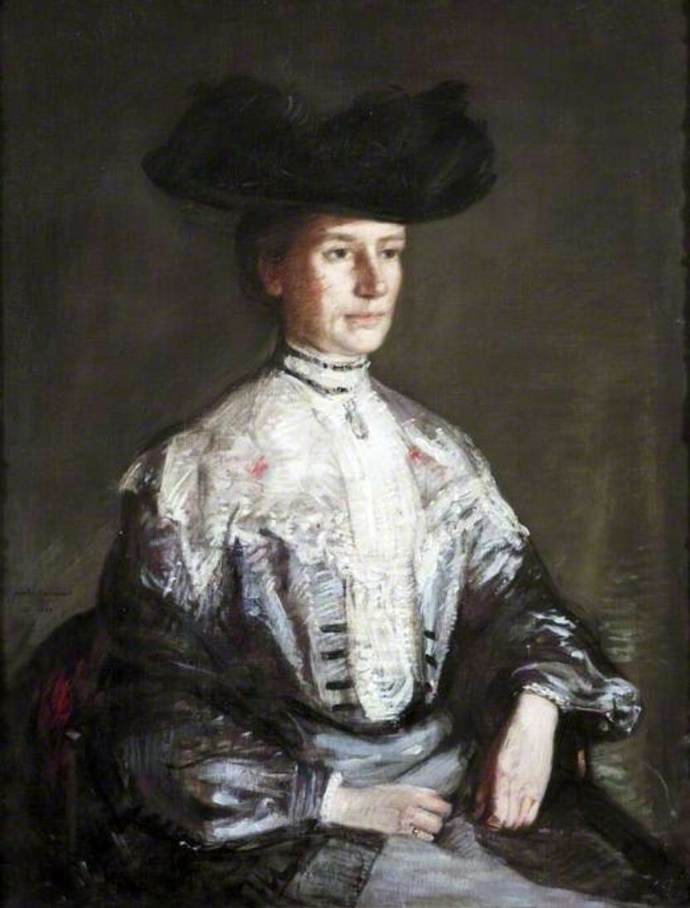

Parallel legacies of wealth and purpose
Emma Holt was the only child of George Holt, the co-founder of the highly successful Lamport and Holt shipping line. In 1883, Emma and her parents moved into Sudley House, a mansion in West Derby (now Liverpool), which became the epicenter of her intellectual and civic life.
Following her father's death in 1896, Emma and her mother, Elizabeth Bright, took complete stewardship of the family fortune. Much like the women of the Manchester brewery branch who operationalized their wealth for public good, Emma eschewed passive patronage. Instead, she became a driving force behind the development of regional infrastructure—specifically championing women's access to the traditionally male-dominated arenas of academia and governance.
A pioneering voice in academic governance
Emma's relationship with the University of Liverpool (initially University College, Liverpool) transformed her into one of the institution's most vital early architects:
- Breaking barriers in leadership: In 1909, Emma joined the Council of the University of Liverpool, serving continuously until 1934 (with a brief gap in 1915–16). At a time when female representation at the highest levels of institutional governance was exceedingly rare, she also served as a life governor.
- The "Fairy Godmother" of the university: Her financial support was so extensive and strategically targeted toward fostering equity and growth that she earned the moniker of the university's "Fairy Godmother."
- Academic recognition: In recognition of her extraordinary structural and financial contributions to higher education, the university awarded her an honorary Doctorate of Laws (LL.D.) in 1928.
Spiritual and civic architecture
Beyond the university walls, Emma was a cornerstone of Liverpool's civic and spiritual community. Rooted in strong Unitarian convictions, she was a key leader and benefactor of the Renshaw Street Unitarian Chapel. When the congregation outgrew its historic site and faced the complex task of relocating, Emma spearheaded the transition and building of the new Ullet Road Church, continuing as one of its primary community leaders well into the 20th century.
Preserving a cultural bequest
Upon retiring to Coniston in the Lake District, Emma ensured that her family's private collections would benefit the public. In addition to individual art bequests—such as donating John Everett Millais's Landscape, Hampstead to the Walker Art Gallery—her beloved home, Sudley House, was eventually passed to the city. Today, it stands as a museum showcasing the exact art collection compiled by her family, preserved in its original domestic setting.
For researchers tracking how the major merchant and industrial fortunes of the late 19th century were converted into lasting regional infrastructure, Emma Holt stands as a masterclass in purposeful governance, leaving a legacy that reshaped the academic landscape of the North West.

as shown on the Ullet Road Church website.URL references: Emma Holt – Wikipedia | National Museums Liverpool – Sudley House | Emma Holt – Ullet Road Church